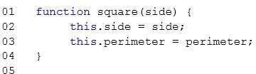

|
You are creating a custom object as described by the following code. Line numbers are included for
reference only.

You need to implement the perimeter method. Which code segment should you insert at line 05? A. Option A B. Option B C. Option C D. Option D Correct Answer: B Section: Volume D Explanation Explanation/Reference: Reference: http://creative-coding.decontextualize.com/objects-with-methods/ ExplicaciónEste código crea un objeto llamado rectángulo, que tiene dos atributos: el valor de un lado, y además su perimetro, ambos números. En este caso perímetro su valor se recoge con una función. Debido a que esta función es un valor en un objeto, las llamamos método.Hay dos partes de sintaxis que necesita conocer para comenzar a usar métodos. El primero es cómo llamar a un método. Para hacer esto, tome una expresión que se evalúe como un objeto, siga con un punto (.) Y luego escriba el nombre del método, seguido de paréntesis. (Los métodos también pueden tomar parámetros, en cuyo caso los paréntesis no estarán vacíos. Consulte a continuación). La segunda parte es la sintaxis es este. Dentro del método, hay una palabra clave especial "this" que se refiere al objeto que contiene el método. Puede acceder a las propiedades, sobrescribir propiedades, agregar nuevas propiedades e incluso llamar a métodos del objeto contenedor. Es importante mencionar que "this" dentro del método se refiere al objeto quien es el que llama al método. El objeto que llama al método perimeter es el objeto "square". Respuesta:Por lo explicado en el apartado anterior la respuesta correcta es la B.Fuentes:La misma dada en la respuesta. |